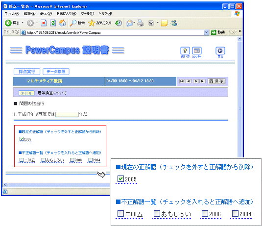
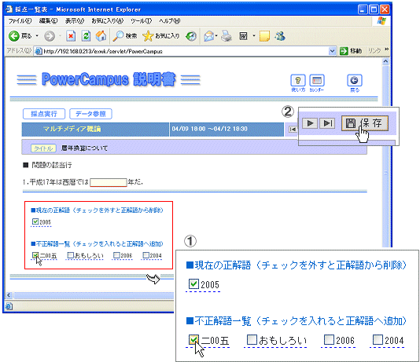
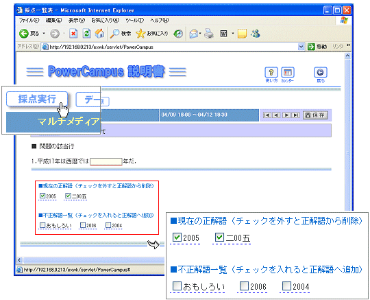

|
 記述式問題が含まれている場合は下図のような前処理画面が表示されます． 記述式問題が含まれている場合は下図のような前処理画面が表示されます．
この前処理では，記述式問題が１問づつ画面に表示されます．そして，上段には正解語が，下段には不正解語のリストが示されます．不正解語は，提出された答案から自動的に抽出されたもので，重複はありません．

 不正解語とされたうち，正解語としてよいものにはチェックを入れます． 不正解語とされたうち，正解語としてよいものにはチェックを入れます．
例では「二00五」という解答は間違いではありませんのでチェックを入れて，保存ボタンをクリックします．これで「二00五」は正解語に加えられます．

 全ての問いに対して同じことを繰り返し，正解語の調整を完了したら，採点実行ボタンをクリックします． 全ての問いに対して同じことを繰り返し，正解語の調整を完了したら，採点実行ボタンをクリックします．

|
|
 自動採点と通知
自動採点と通知


 問題に記述式が含まれているかどうかで採点画面のメッセージが異なります．
問題に記述式が含まれているかどうかで採点画面のメッセージが異なります．
 自動採点は何度でもやり直して構いません．そのたびに採点結果が上書きされます．
自動採点は何度でもやり直して構いません．そのたびに採点結果が上書きされます．
 自動採点後，課題画面に戻り以下のように表示されます．
自動採点後，課題画面に戻り以下のように表示されます．